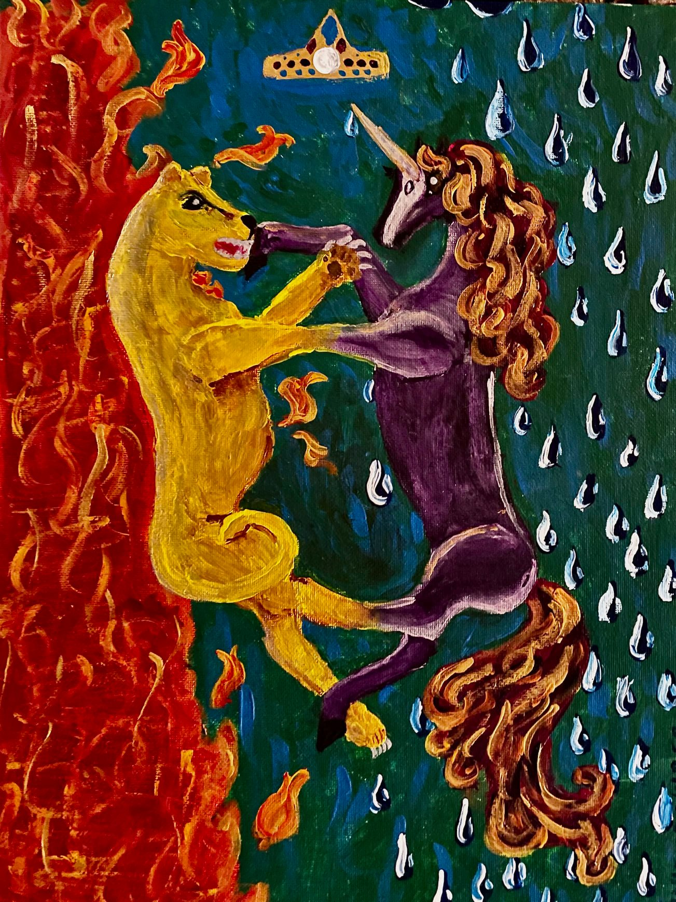
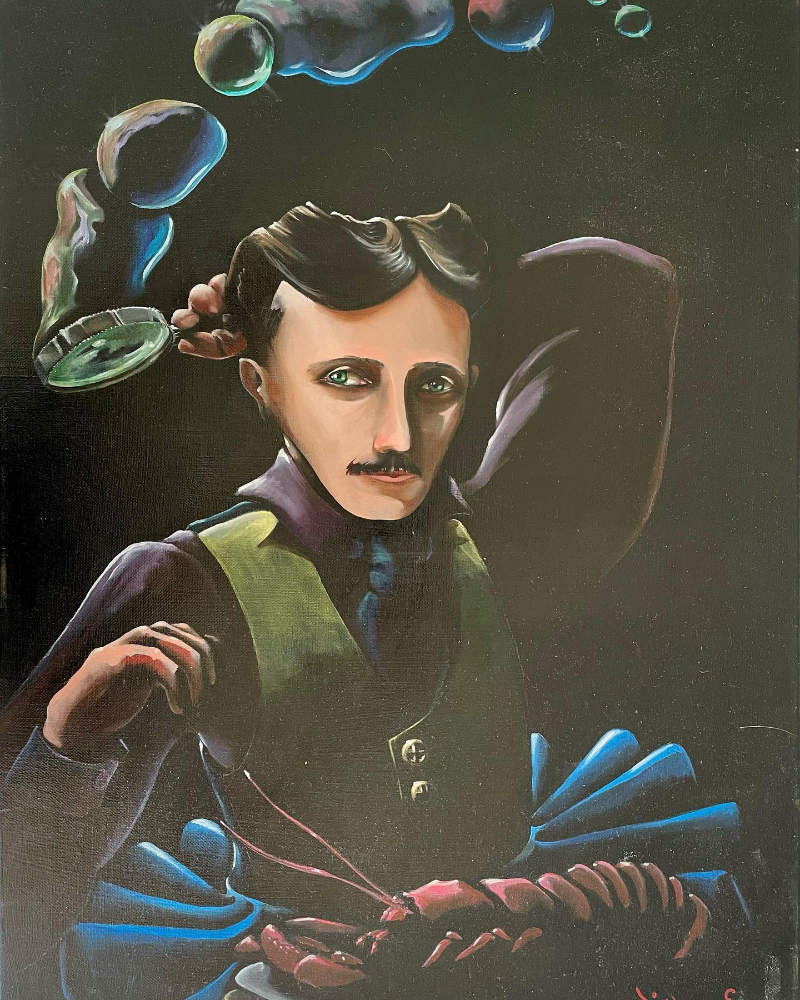
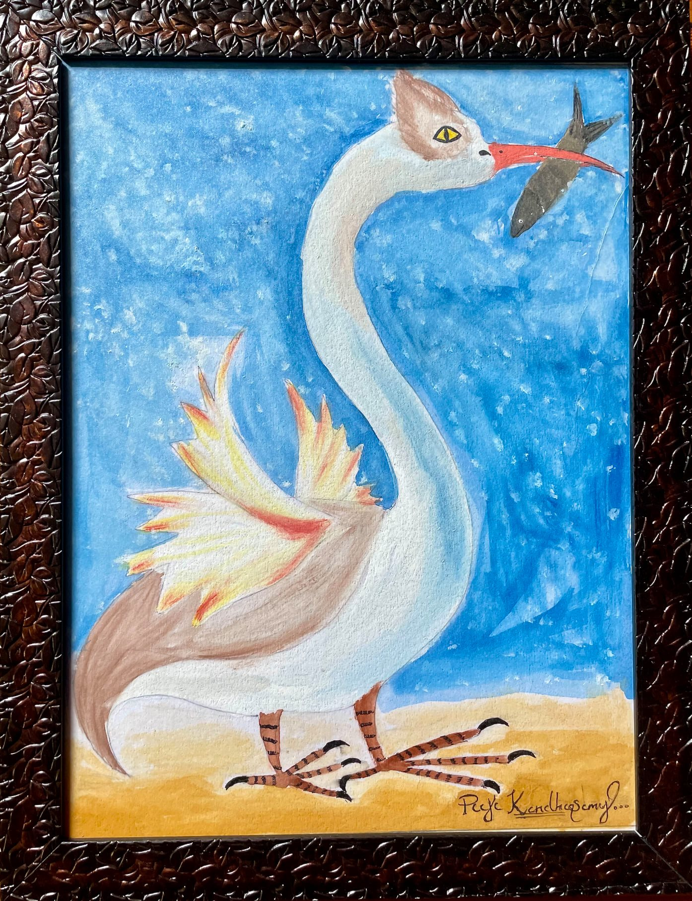
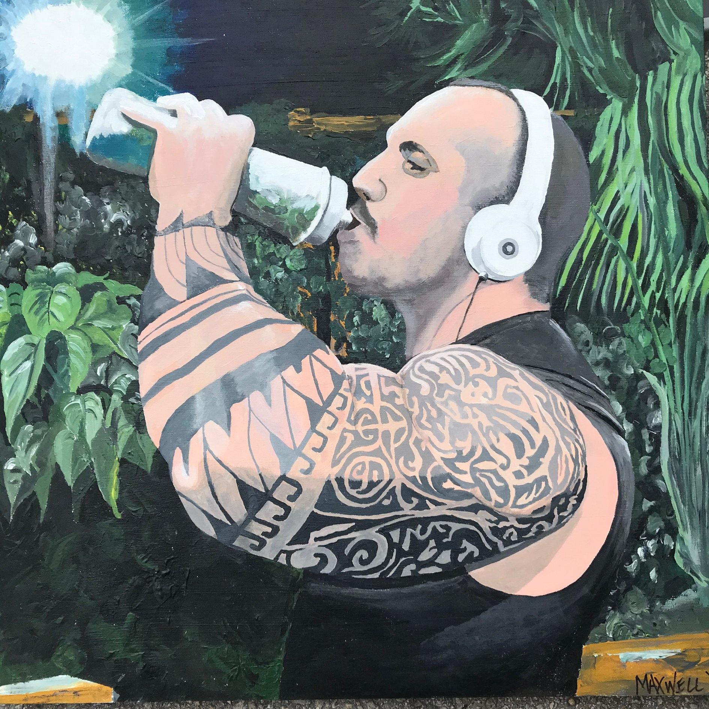
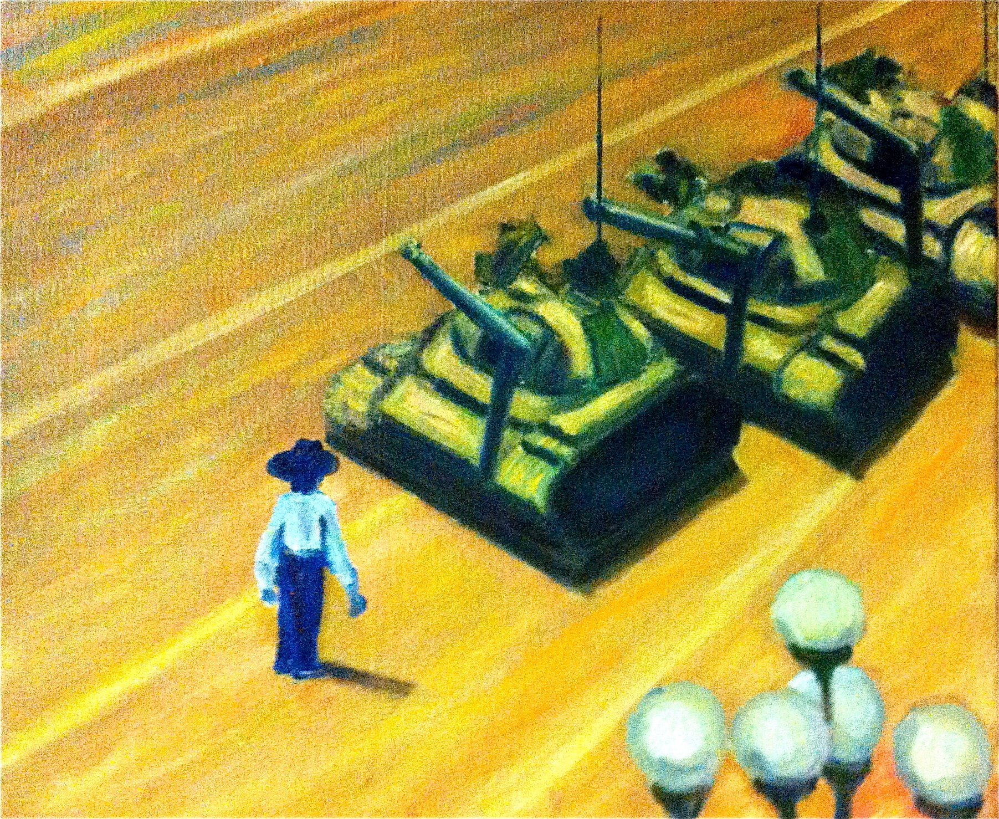
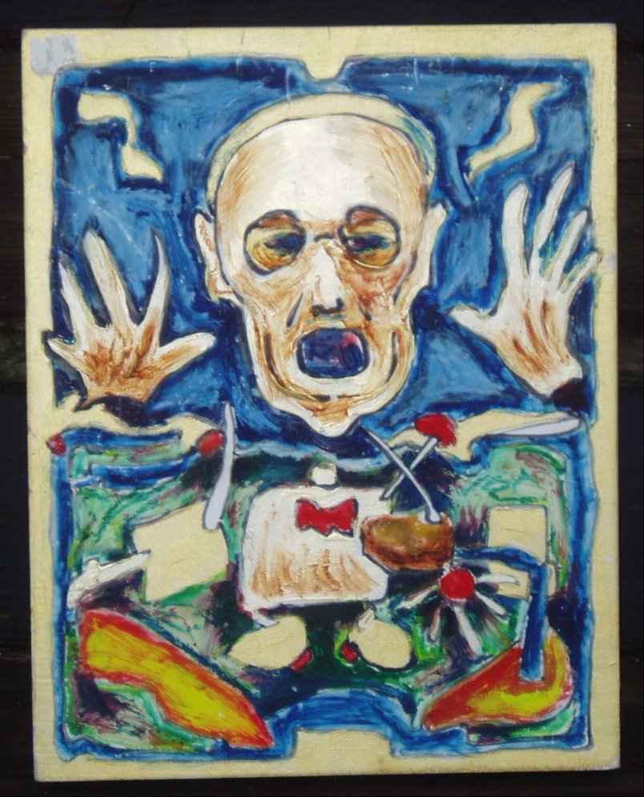
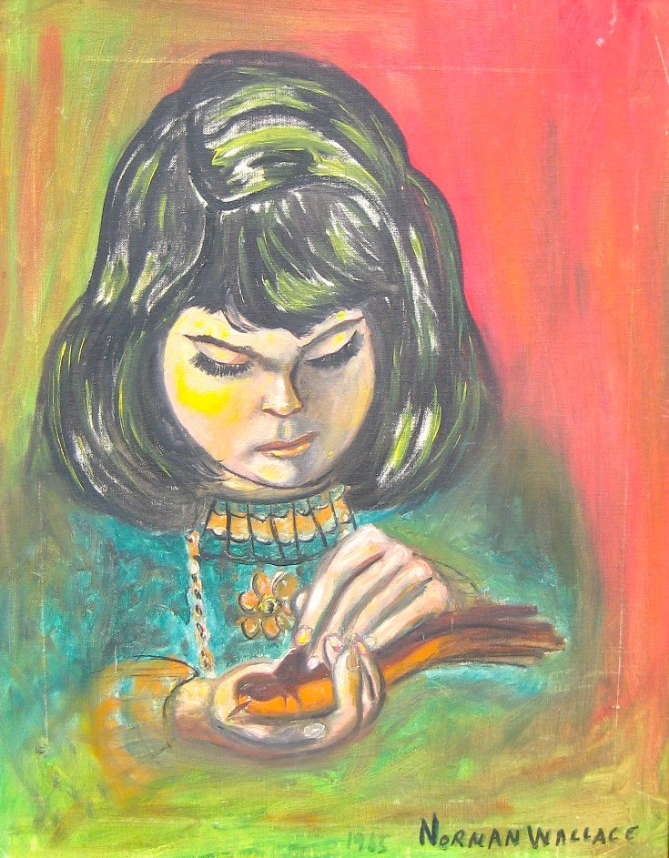
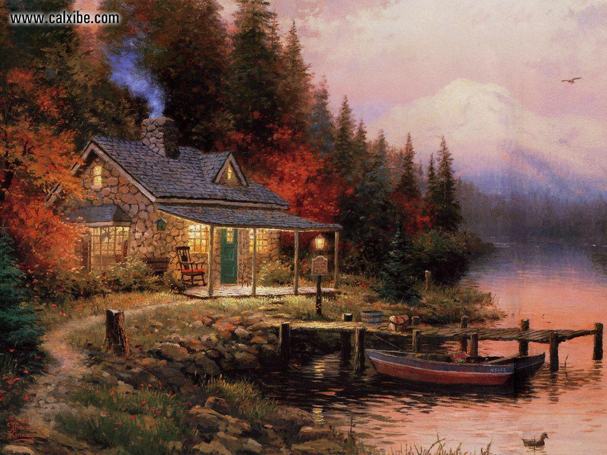
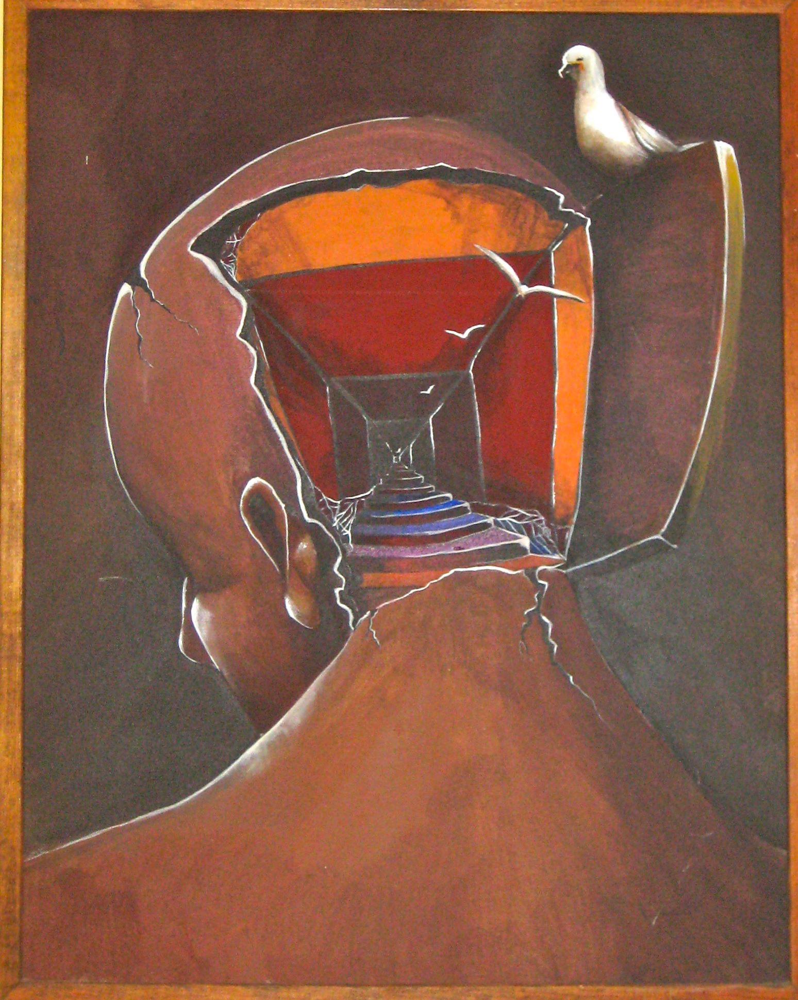

El Leon y el Unicornio
DC

Esta es una representación visual de una antigua canción infantil británica, adaptada por Lewis Carroll en A través del espejo, sobre una batalla entre especies. La melena y la cola lustrosas del unicornio ofrecen escasa defensa contra los dientes afilados y las garras del león. El artista agregó fuego y agua al fondo, pero eligió no delinear ni el pan blanco, el pan integral ni el budín de ciruelas a los que se hace referencia en el poema.
Nikola Tesla
L'Dane Ember

Entre las contribuciones de Nikola Tesla a la vida moderna se encuentran la corriente alterna, los rayos X médicos, la radio, la energía hidroeléctrica, las luces de neón, los dispositivos de control remoto y, al parecer, la varita de burbujas. Evitaba comer carne, pero era famoso por su afición a los mariscos hervidos.
Cisne Imaginario
Pooja Kandhasamy

Con alas que probablemente no vuelen, patas de gallina, orejas de burro, pico puntiagudo y ojos de egipcio; este cisne es un pato extraño.
JUICING: Mejor vivir a través de la Química
Maxwell

Al darse cuenta de que nunca obtendría los resultados que quería simplemente haciendo ejercicio, esta rata de gimnasio recurrió a la ayuda complementaria.
Un Mariachi en la Plaza de Tiananmen
Anonimo

El Tank Man anónimo de la plaza de Tiananmen se convirtió instantáneamente en un héroe de la protesta política en China en la primavera de 1989. Inspirándose en la fotografía del incidente de Jeff Widener, el artista agregó color y cambió la perspectiva para enfatizar el poder relativo del hombre sobre el máquinas militares de juguete. Su traje de mariachi puede indicar la universalidad de la lucha contra la opresión en todo el mundo
La vida es algo mas que solo vivir
Marca Gewiss

En este homenaje a la obra de Edvard Munch, el sujeto, que se parece a William S. Burroughs con el cuerpo de Sponge Bob Square Pants, levanta las manos y grita "¡L'chiam!" antes de disfrutar de su almuerzo desnudo.
Un Pajaro en la Mano
Norman Wallace

Tomando prestado un motivo de NIÑA CON UN PÁJARO, del retratista francés del siglo XIX Etienne Adolphe Piot, el Sr. Wallace usó agradables tonos pastel en este retrato de una niña con hermosas pestañas preocupada por un pájaro cantor herido o posiblemente muerto.
El Final de un Día Perfecto
Thomas Kinkade

Si bien su trabajo era un producto comercial y, por lo tanto, no elegible para MOBA, todos en Ivory Tower sentimos que seríamos negligentes si no notáramos el fallecimiento prematuro de Thomas Kinkade, el autoproclamado "Pintor de la luz".
BIRDBRAIN
L. Greselin

A diferencia de los canarios sacrificados en una mina de carbón, las gaviotas en esta pintura metafórica son libres de irse cuando sienten que las condiciones se están deteriorando.
Maximilian Rousseau
Hombre Pensante

La pintura captura la tensión entre la inmovilidad física y la actividad mental, con la figura del hombre que expresa todo su pensamiento en su maxima gloria.
Un mar de locos
Anonimo

"Mar de Locos" es una pintura que desafía las convenciones y sumerge al espectador en un mundo caótico y surrealista. El lienzo es una explosión de colores vibrantes y pinceladas enérgicas que representan un mar en constante agitación. La obra se compone de una combinación intrigante de elementos fantásticos y figurativos.
Lienzo a mano armada
Dio Brando

"Lienzo a Mano Armada" es una pintura que evoca una sensación de rebelión y fuerza en su expresión artística. En el lienzo, se representa una escena intensa y dinámica donde los trazos del pincel parecen desafiar la norma establecida.